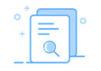

选择时间

- 您没有对应的订单内容哦~
- 您可以通过订单预定功能，来
温馨提示
1.订单信息在本网站保存明限为30日。
2.在本网站购票后， 没有换取纸质车票的，可不晚于开车前25分钟在本网站办理改签、退票业务，或不晚于开车前48小时在本网站办理 变更到站业务。
3.在本网站办理退票，只明逐次单张办理。
4.车票改签、变更到站构只能办理一次已经改签或变更到站的车票不再办理改签;对已改签车票团体票暂不提供变"更到站"服务。
5。退票改签、变更到站后如有应退票款，按购票时所使用的在线支付工具相关规定，将在规定时间内退还至原在线支付工具账户，请及时有询，如有疑问，请致电12306人工客服查询。
6.如需取消或直看车票快递状态，请点击快递详情。
7.投保退保或查看电子保单状态,请点击我的保险”或购增退保险。
8.未尽事宜详见《铁路旅客运输规程》等有关规定和车站公告。